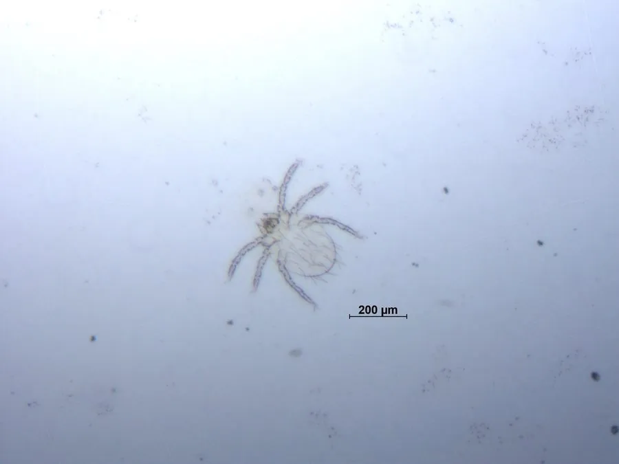

蛛形动物 · 动物界
地里纤恙螨 Leptotrombidium deliense

中国南方和东南亚的恙螨，幼虫叮咬人或鼠类后可引起恙虫病，是恙虫病东方体的重要传播媒介，体长不足 1 毫米。
- 分类
- 门节肢动物门纲蛛形纲目绒螨目科恙螨科属纤恙螨属
- 栖息环境
- 草地、灌丛和农田的土壤表层，幼虫在草叶上等待宿主
- 地理分布
- 中国南方、东南亚和南亚
- 保护级别
- IUCN 暂无评估；中国未列入国家重点保护名录
物种志
地里纤恙螨成虫和若虫体长约 1–2 mm，体色橙红或淡黄，身体覆盖细毛；幼虫体长仅 0.2–0.5 mm，呈橙红色，足三对，口器发达，是唯一吸血的阶段，常附着在鼠类耳壳和人的皮肤上。
它分布于中国南方、东南亚和南亚的草地、灌丛和农田，幼虫在夏秋季活跃，叮咬鼠类吸食组织液，也可叮咬在草地活动的人。地里纤恙螨是恙虫病东方体的重要传播媒介，被叮咬处可能出现焦痂，随后发热、头痛、淋巴结肿大，需及时就医。它的生活史包括卵、前幼虫、幼虫、若虫和成虫，雌螨产卵于土壤中。防治以清除杂草、灭鼠和做好个人防护为主。目前 IUCN 暂无评估；中国未列入国家重点保护名录，但它是重要的公共卫生媒介。
形态与习性
- 食性幼虫吸食鼠类和人等宿主的组织液
- 体长幼虫 0.2–0.5 mm，成虫和若虫 1–2 mm
- 识别体色橙红，幼虫足三对
- 生活史卵、前幼虫、幼虫、若虫、成虫
- 危害传播恙虫病东方体，引起恙虫病
- 防治清除杂草、灭鼠、做好个人防护
趣味知识
- 只有恙螨的幼虫会吸血，成虫和若虫并不吸血。
- 被恙螨叮咬处可能留下黑色焦痂，是恙虫病的重要线索。
- 在草地活动后应检查衣物和皮肤，减少被叮咬的机会。